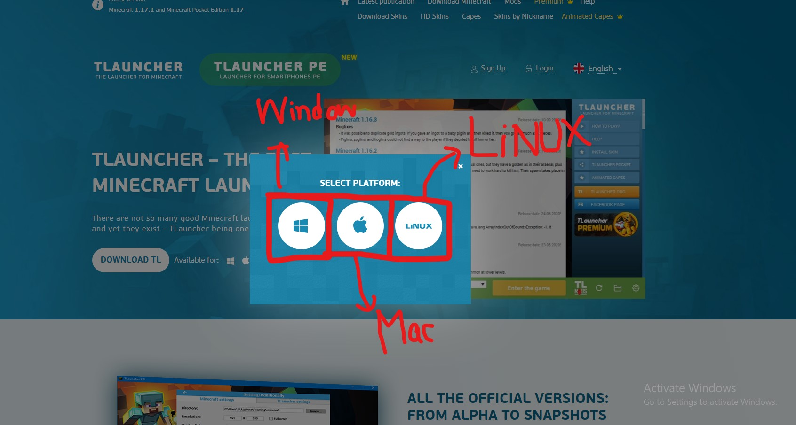

Click here to open the website of TLauncher: TLauncher download
After opening the website, click the download button a as shown below:

After clicking the button, click windows button if you are on a window, and click Mac Button if you are on a Mac computer and click on LiNUX button if youa re on LiNUX.

The will be downloaded automatically. Click "Show All" button at the bottom right corner, a tab will appear showing TLauncher is downloading.
Once TLauncher is downloaded, click on it.
After clicking, click "yes" in the pop-up window.
Click "Continue".
Then, make sure you accept the pricay policy of TLauncher and then click "Continue".
Click "Continue" to install Tlauncher.
TLauncher will be installing.
Click "Continue" to run TLauncher and make a shorcut of TLauncher in desktop.
TLauncher is now installed.
TLauncher will automatiicaly run.
Put your username of what you like in the username box and select any version of Minecraft, the lastest version is recommended because it contains all of the things and will not be bugged, and then click install.
You can make a TLauncher account and buy premium account of TLauncher. Wait for the version to be downlaoded.

After this, Minecraft window will appear.
After this, you can select singleplayer or multiplayer, if you want to play by your own then click singleplayer and if you want to play with other players then click multiplayer.
And this is how you downlaod and player Minecraft by using Tlauncher